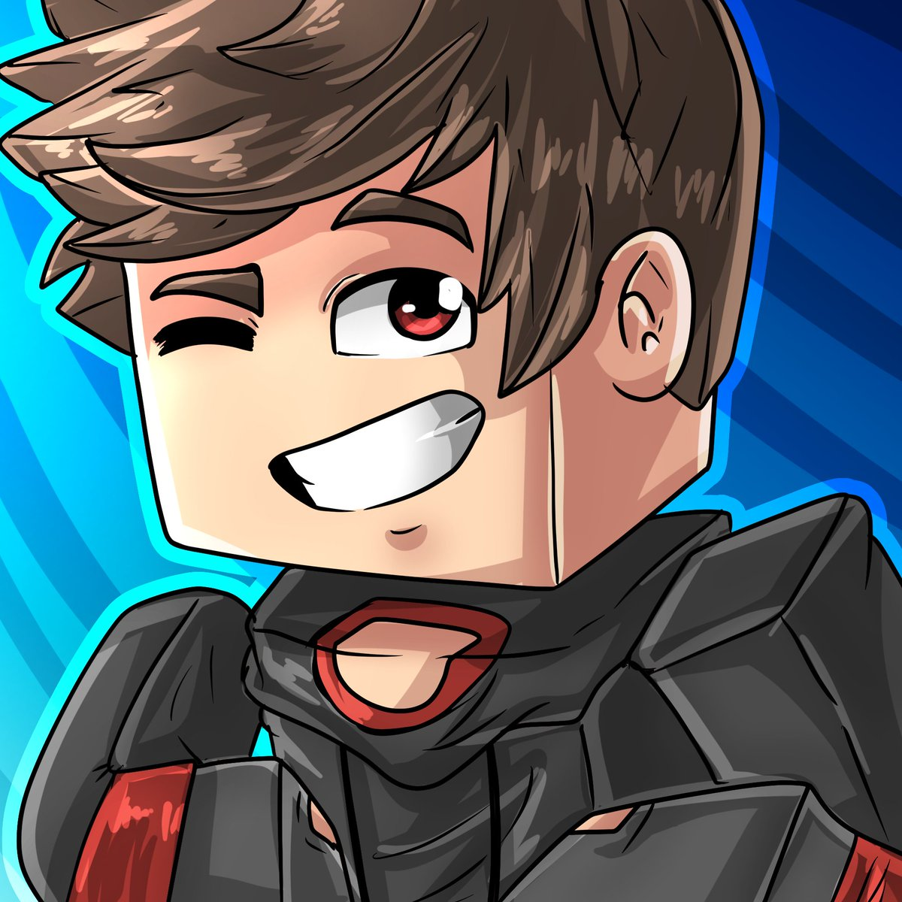

About Me
I’m just_wavey, a passionate Minecraft streamer and artist, creating custom resource packs and sharing my adventures in the Minecraft universe.
Want to see my work in action? Visit my YouTube channel for all my videos!
My Creations
Resource Pack for Swords, Tools, and More
This resource pack includes custom textures for swords, tools, and more, as well as edited hearts to enhance your Minecraft experience.
I will publish it in this website when I hit 200 subs!.
So help me reach 200 subs!
Minecraft Art 1
A creative Minecraft art piece showcasing unique character designs.

Minecraft Art 2
Another artistic representation of Minecraft characters with a creative flair.